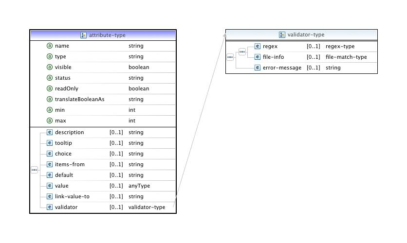
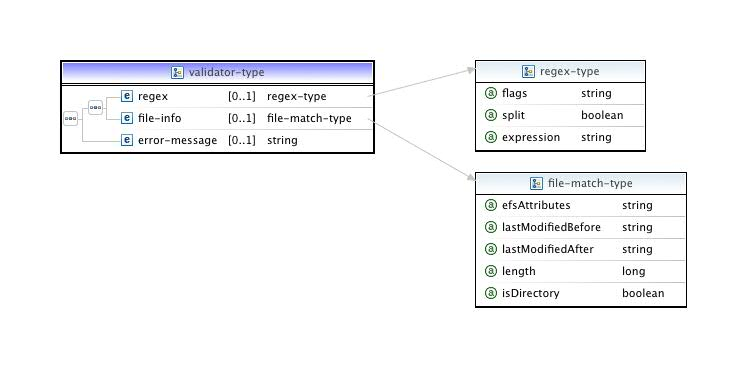
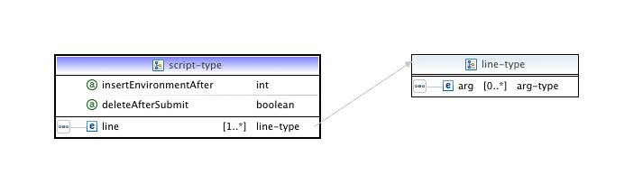

Aside from some significant bug fixes, there are a number of new features with the 5.0.1 release.
widget component has been split up into
three components: widget , button-group , and browse ;action push-button
functionality has been added;control-state
elements have been added to all UI control descriptors;import
controller type has been modified (largely for maintaining unformity
of implementation) to subclass the dynamic controller;In addition, some tweaking of the SWT "knobs" was necessary to get the XML to reflect more closely the behavior of the Java classes (especially in terms of defaults).
The JAXB Resource Manager plug-ins allow you to launch and monitor
applications on local or remote resources using resource managers
which are configured from an XML file via JAXB (
javax.xml.bind
) technology.
There are two main motivations for providing this class of resource managers:
Additional considerations in designing a generically configurable resource manager were to partition the client functionality so as to eliminate the need for special server-side proxies and to scale more successfully in the updating of job and resource information.
To this end, JAXB resource managers now consist of two components, a "control", which governs the configuration, launch and cancellation of individual jobs entirely from the client end, and a "monitor", which displays job status as well as global information about the HPC resource. In most cases, the monitor will be a pre-built type provided by the PTP distribution, implemented using LLview. Since LLview already supports a good number of the standard scheduler types, adding a new resource manager type will normally entail only the specific configuration of its control part. The default mode of usage is that the client stages the necessary LLview components (mostly Perl scripts) automatically, but in a future release, the monitor will also be capable of connecting directly to a system-wide (web-based) deployment.
The following is a guide to the resource manager XML definition. Those interested only in using the JAXB resource managers already provided with the PTP distribution should consult the User pages under the relevant scheduler (currently only the PBS resource managers are JAXB-configurable; please see the PBS Res Mgr help).
We provide here an introductory tutorial slide set demonstrating some simple additions to a pre-existing resource manager definition file. For some example XML illustrating various aspects of the schema (particularly UI features), we also provide a .zip file (for PTP release 5.0.1).
The preference options are aids for debugging configuration changes. The first has to do with altering the default behavior of the resource manager, which is to cache its XML definition file; this can be overridden to reread the file every time you start the Resource Manager. This way, if you make changes, they will automatically be picked up without having to reboot the application or recreate the Resource Manager.
The other options are useful if you are writing a new stream tokenizer for a command; checking all four options usually produces quite a bit of output, so in that case it may be advisable to log the results to a file rather than stdout (at any rate the latter would be available only if PTP were running as an application within the Eclipse IDE platform, which is not the case for those modifying the XML simply from within the PTP package installation workspace).
The JAXB Resource Manager is model-driven ; this means that its functioning and appearance are determined by a set of definitions provided via an XML file. What follows is a detailed explanation of the schema governing the resource manager XML definition.
The top-level of the definition tree consists of three elements: site-, control- and monitor-data. In addition, a resource manager should be given a name which sufficiently distinguishes it from others of a similar type; e.g., pbs-torque-v_2.3.7_abe is specific to an installation on the host abe, ll-v_4.0 suits all installations of LoadLeveler version 4, etc.
The site-data element provides an optional place to set fixed
or default remote site information. The connection strings are URIs
which are specific to the PTP RemoteServices definitions. The scheme
for these URIs will usually name the specific remote service (e.g,
rse:
or
remotetools:
; local is simply
file:
). The host name and port given here will appear as defaults in the
resource manager selection wizard when you create a new connection.
The principal section of the schema is devoted to defining the resource manager's control part. The top-level control elements include properties and attributes, files to be staged, job script to be generated (if any), commands specific to the resource manager, and the layout of the Launch Tab.
The resource manager implementation constructs a variable map from the
defined properties and attributes which serves as the resource manager
"environment". Some elements directly reference these by name; a
text/string representation of property or attribute fields can be
obtained via the Eclipse variable resolver syntax, with the namespace
prefix set to ptp_rm:
${ptp_rm:name#fieldName}
, e.g.,
${ptp_rm:queues#value}
(see further below on the
specific fields for properties and attributes).
All properties and attributes defined in the configuration are mapped.
The following hard-coded properties are also added at runtime:
control.user.name
control.address
control.working.dir
executablePath
progArgs
directory
In addition, these properties may be linked (see below) to other attributes to
furnish the resource manager with an implementation-independent
variable for the queue and for any remote output files produced in
connection with the job submission.
control.queue.name
stdout_remote_path
stderr_remote_path
Commands are system calls, either to a local or remote OS,
depending on the connection defined for the resource manager. The start-up-
and shut-down-commands are arbitrary commands to be run
(serially in order) when the resource manager is started or stopped.
The submit commands are those used to launch jobs. Currently a
configuration may have only a batch or an interactive mode. Thus it
may have only two submission modes, a run and a debug, for the given
type. In the future we may allow all four to coexist in a single
configuration. get-job-status is a user-initiated (on-demand)
request to refresh the status information for a submission. Normal
(polled) updates, on the other hand, are the responsibility of the
monitor
component. The status command nevertheless needs to be implemented in
most cases, as it will be called internally just after submission. The
remaining "-job" commands are operations which can be executed on
submitted jobs; with the exception of terminate, the rest of
these have to do with schedulers (batch-systems) and do not apply to
resource managers which connect to interactive runtime-systems such as
OpenMPI or PE. Note: if the submission type is interactive, the
terminate-job command usually does not need to be implemented,
as the process termination will be handled internally. However, in
some cases (such as PBS -I) which require the interactive job to run
as a pseudo-terminal, one may need this command in order to force its
termination externally. Finally, a button-action is an
arbitrary command associated with a button exposed through the
Launch Tab
(see further below).
The majority of the XML definition is given over to the set-up of the resource manager control. One can think of this section as having four subdivisions:
We will look at these each in turn.
A property is any variable necessary for the functioning of the
resource manager. Properties often (but not necessarily) are not
visible. The value for properties can be any primitive type, or lists
or maps of strings. If
stdout
and
stderr
from a scheduled job is to be delivered to the client, the properties
stdout_remote_path and stderr_remote_path should be
included in the resource manager property set. Simarly, the native
designation for the selected queue, if used, should be linked to control.queue.name.
The distinction between attribute and property is not hard and fast, but the intention is to provide a way of differentiating between external, system-determined variables (attributes) and variables only required by the PTP implementation itself. There are several other elements and fields on the attribute, e.g., for type-specific defaults (min/max, choice). Generally, if the variable is exposed to the user, who should also be provided with a description or instructions for use, then it should be defined as an attribute.

The visible attribute is a way of indicating to the resource
manager that the user will not be directly changing the value of the
property or attribute via the user interface. Certain widgets (such as
the
attribute viewer
) check this to see if the property or attribute should be included
automatically in its list.
Always mark properties or attributes which are the targets of saveValueTo (see below) as visible="true"; if this value is false, this variable will always be passed to the configuration/environment of the resource manager; selection/exclusion of sets of properties or attributes pertains only to those marked visible.
status is an optional field for capturing the validity of the attribute at runtime or for a particular installation, if such information is made available by the system. The readOnly property can be defined here, but more often will be enforced directly on the widget which is connected to the property or attribute. min and max give the boundaries for integer values, usually represented by spinner widgets.
description
is meant to be a brief one-sentence definition; most of the time
detailed information will go into the
tooltip
element.
choice
is a predetermined, fixed set of values to choose from; these are
comma-delimited and will appear as the items of a combo-box.
items-from
instead links the combo items (choice) to another property or
attribute value (whose type must be
java.util.Collection
).
The untyped
value
element on properties and attributes is for internal use only; to give
a predefined (primitive) value, use the
default
element along with the type attribute.
link-value-to
works as follows: the property or attribute gets its value from the
property or attribute linked to, unless that property or attribute has
an undefined (empty) value; in the latter case, any default defined on
the present property or attribute will be used. This feature is
primarily intended for defining dependent properties or attributes
whose values are not directly modified by the user.
Attributes also carry optional validators which allow you to enforce syntactic rules or file-system semantics on the value when the user enters text.

The validator makes use of the
regex
type (also used in the parser or tokenizer; see below), along with a special
file-match
type. A regex can be used to match by setting the expression
field; to split the segment into tokens on the basis of the
expression, set the split field to true (this applies only to
the
match
type discussed below). The expression should
follow the grammar in
java.util.regex
; the flags are those made available in the
java.util.regex.Pattern
class (consult the Javadoc for explanations):
These can be OR'd in the usual manner.
file-match
exports the attributes pertaining to
org.eclipse.core.filesystem.IFileInfo
; efsAttributes is an OR'd string of the EFS constants:
The lastModified... fields require the format
yyyy/MM/dd HH:mm:ss
.
By "managed file" is meant a local file required by the executable but
which may not be present on the host on which the job will run; hence,
these files may either be external or may actually be generated from
the resource manager environment in conjunction with the job
submission, but in any case need to be copied to that host just prior
to it. The
script
file used in connection with scheduler (batch) jobs is a special
category of the
managed-file
type, and will be discussed in the next sub-section.
Managed files are added to the definition in groups determined by
their shared staging location, which is a path relative to the working
directory of the connection. (The batch script is by default staged to
.eclipsesettings in the user home directory, since it is by
default temporary and deleted after the submit call returns; however,
one can use the
file-staging-location
on the
script
element to set the path explicitly.) The file itself can be set to be
deleted after submission (deleteTargetAfterUse; this is
currently not implemented in the general case) and if the file is
actually generated by the resource manager, the local temporary copy
can be deleted or retained (deleteSourceAfterUse). In the
latter case, one can also distinguish multiple copies of the generated
file by setting uniqueIdPrefix to true.
The managed file definition allows one of three possibilities as to specifying content.
path element to indicate
location; this can be either a hard-coded path or a reference to a
property or attribute value.contents element is a string which literally
represents the file contents. The resolveContents attribute in
this case is used to indicate whether to pass this string through the
variable resolver, substituting any references to property or
attribute values it may contain. However, caution should be exercised
here in that this string should not contain "${...}" sequences which
do not actually refer to Eclipse variables (such as batch script
variables), or the resolution will fail. If resolveContents is
set to false, you can still provide this text element with a single
reference to a property or attribute, in which case the value of that
property or attribute will be used as is, without further
dereferencing.line
type which is discussed below in connection
with the script type.When the submit call is executed, managed files are written out, if so indicated, and then their target paths are determined as follows:
path element is used, the target path
becomes staging directory / name of pre-existing file;content or line elements are
used, the target path becomes staging directory/
[uniqueIdPrefix]managed-file-name);A resource manager definition for a scheduler system such as PBS or LoadLeveler can be instrumented to work without a batch script (by setting command-line flags or passing all the job control information as environment variables, for instance), but most frequently the use of a script allows more flexibility in configuring the job (interactive managers of course have no need of a script).

If the script is specified in the XML definition, its path is
automatically added to the list of managed files to be staged to the
appropriate directory (by default .eclipsesettings, or
whereever indicated by the
file-staging-location
element), and so there is no need to include a script entry explicitly
under the
managed-files
element. As with the
managed-file
, deleteAfterSubmit indicates that the script target should not
be retained (this is the default behavior); unlike the
managed-file
, however, the local copy of the generated script is always deleted. A
reserved property,
managed_file_for_script
, should be used to reference the script's path on the target
resource; for instance, in the PBS submit command:
<arg>qsub</arg>
<arg>${ptp_rm:managed_file_for_script#value}</arg>
Note: If the
import
tab (see below) is used to provide an
external or workspace edited batch script to the run, nothing extra
need be done in the definition XML, as the presence of any external
path for the script is handled under the covers.
insertEnvironmentAfter is a line number indicating where in the script to add any extra environment variables set through the Environment tab provided as part of the Run Configuration wizard. This way the user has control over whether these should overwrite previously defined environment variable values.
line and arg types
The
line
element was mentioned above in connection with
managed file content; it is essentially a wrapper around a series of
whitespace separated
arg
elements, all of which are placed on a single line (that is, the group
is terminated by a line separator).
The
arg
element is used for script and managed file content as well as in the
definition of commands. Its text element can contain variable
references to be resolved against the environment, but also allows for
the entire string to be treated as a literal by setting resolve
to false (default is true). This is useful inasmuch as it allows for
the presence of batch-type variables (e.g., ${HOME}) which should be
resolved by the remote shell and not inside the Eclipse client.
The default behavior of the argument resolver is not to write out or
include arguments whose value is undefined (either
null
or zero-length). isUndefinedIfMatches affords more nuanced
control over whether an argument should be so eliminated. If the
argument references property or attribute values, but also has
text-literal segments, a regex can be provided to define what an
"empty" argument would be in this case. For instance, if an argument
flag should not appear when the value it precedes is an empty string,
one could write:
<arg isUndefinedIfMatches="-f">-f
${ptp_rm:flag#value}</arg>
For the purposes of matching, trailing whitespace is trimmed from the resolved argument, so there is no need to specify this as part of the regex used to match.
managed-file paths
@jobId is a special property name designating the runtime id for a job instance. In the lifecycle of the run/launch (submit) call, this value begins as an internally generated unique id which then is swapped for the id returned by the scheduler or runtime system.
The @jobId, along with the target paths for
managed-file
elements, are not known at configuration time (i.e., before the user
hits "Run"). While the former is made visible to the parsers and the
returned status object of the submit command, neither is in the scope
of (available for reference in) other managed files or the
script
element, because these latter elements are generated just prior to the
actual submission.
If the
script
needs to refer to the @jobId, it must do so via the variable
made available by the particular scheduler it is written for. An
example of how to reference the target path of a
managed-file
inside the
script
is included in the tutorial slides; this
essentially involves defining a variable in the submission command's
environment, with a reference to the
managed-file
path property as its value, and then using this environment variable
inside the
script
.
As mentioned above, the resource manager
command
denotes a [UNIX-type] system call made on the resource manager's
remote (target) connection (PTP does not generally support execution
on Windows systems). The command is always configured and executed
through a Java API (the "process builder") which bottoms out in a
bash -c
command. The first argument of the command thus must be the name/path
of the executable only. Its own arguments can then be subsequently
specified by an arbitrary number of
arg
elements.
There are a number of important attributes on the
command-type
element which bear detailed discussion here. directory of
course refers to where the command will be executed; this
defaults to the "home" or working directory of the remote control
connection (the control.working.dir property); also as
expected, redirectStderr means that both output and error
streams are sent back on
stdout
. One can, if necessary, tune the buffer sizes on the stream readers
via the streamBufferLimit. If the environment set on the
command should entirely replace the shell environment (the default
behavior is to append the command environment), set replaceEnvironment
to true.
If you do not wish an error to be thrown in the case of non-zero exit of the command, set ignoreExitStatus to true. The flags attribute is an OR'd string of three possible values:
Two crucial fields for command control are waitForId and keepOpen. The former indicates to the resource manager that the output stream for the command is being parsed for an id which will appear as a property in the environment during the command execution, and that the execution should not return until it sees this id. Very often the submit commands will have these semantics. The latter field indicates that the command should be held open for potentially repeated redirection of input (see next paragraph). There can only be one such process open inside the resource manager at a time (these semantics will usually pertain to interactive managers using a pseudo-terminal mode to control job submission).
As previously described, there are two
basic types of commands, (uu)id commands which are related to a
specific job, and generic (non-uuid) commands.
submit-
and
-job-
commands fall into the former category; those in the latter category
are usually simple interactive commands, and their output is not
redirected to the console, but uuid-commands have several subclasses:
| COMMAND TYPE | WAIT FOR ID | TOKENIZER STATES |
|---|---|---|
| batch | yes | SUBMITTED |
| interactive | no | |
| interactive | yes | RUNNING |
| interactive, open | no | |
| interactive, open | yes | (SUBMITTED,) RUNNING |
| interactive, open, pseudo-terminal | no | |
| interactive, open, pseudo-terminal | yes | (SUBMITTED,) RUNNING |
This table shows the various combinations that are feasible between
command type and waiting states. Simple interactive commands, whether
held open for further input or not, can wait or not wait, but in the
case of waiting, they should be provided with a stream tokenizer which recognizes and sets
the RUNNING state. Batch jobs, on the other hand, will usually have a
tokenizer which recognizes and sets SUBMITTED. In the case of some
open-process jobs (e.g.,
qsub -I
for PBS, which also requires a pseudo-terminal to connect remotely),
there will usually be a pause before the terminal job is actually
scheduled; in order to allow the user to see that the job has been
accepted and is pending, the tokenizer needs to set both SUBMITTED and
RUNNING states, the latter when the job has actually started.
We have discussed the
arg
type above. Note that the command arguments,
input and even environment variables make use of this element. For the
name-value-pair
type comprising the latter one can as simple alternative set the value
attribute to a string (which will be resolved first in the current
environment); finer-grained control over the resolution of the value,
however, requires the use of the
arg
type. When there is
input
present, it is directed to the input stream of the command. If the keepOpen
attribute is true, a check will be made to see if there already exists
an open process (which is also alive), which will then be used;
otherwise, the arguments are executed, then the input arguments are
given to the process. With an open command/process, the input
arguments can be fed repeatedly to the same process; this allows, for
instance, for continuous testing of an interactive job in the same
interactive session.
One can attach parsers (which we also refer to as tokenizers) to the
output and error streams of any
command
in order to capture information and use it to side-effect existing
properties or attributes, or to generate new ones on the fly. While
the parser is not completely general, it is capable of a wide range of
tasks which would typically be required in the handling of output from
batch and runtime systems. We here explain the main elements (
target, match, test
) used by the tokenizer; one should further consult the tokenizer examples demonstrating
various usage scenarios.
The
type
element will most commonly not be set, meaning the built-in parser
will be used; however, it is possible to implement a custom parser as
a contribution to the
org.eclipse.ptp.rm.jaxb.core.streamParserTokenizer
extension point, in which case this element should be set to its
extension id (note however that such a parser is not configurable from
the XML document).
The built-in tokenizer can read the stream in two different ways. If delim is provided, the stream is split using the indicated value. The string should only be one character in length (escaped or non-escaped). Provision is made for the '\r\n' (Windows) two-character delimiter internally; in this case the delimiter should be set to "\r" (however, as already mentioned, PTP does not generally guarantee that system calls will work on Windows). Setting includeDelim means that the delimiter will appear as the last char on the returned stream segment.
The second way to read from the stream is to provide a maxMatchLen size; what this indicates is that whatever substring needs to be found on the stream will not exceed this length. The stream is then read in swatches of maxMatchLen, with the internal buffer set to twice this size, so that each successive read shifts the buffer to the "left" by one length. This guarantees that all such substrings will eventually be matched.
Sometimes a sort of "look-ahead" paradigm is necessary. For instance, one may need to match a segment or segments whose position is defined from the end of the output, but you do not know in advance the actual stream length. In this case, one can opt to read until the end of the stream (all="true"), retaining only the last N buffer-lengths or delimited segments, as indicated by the save field. When the parser reaches the end of the stream, it will then apply the various targets to each saved segment in order.
applyToAll is discussed further under
target
. The
exit-on
element indicates that the tokenizer should quit immediately when it
encounters this pattern;
exit-after
indicates that the tokenizer should quit when it encounters this
pattern, but should first apply the current segment to its targets.
A tokenizer may be given any number of
target
elements. The target denotes a particular value (object) currently in,
or to be written to, the environment, which will be side-effected on
the basis of the result of the tokenization. A target in turn contains
match
elements and
test
elements; the former are run as part of the stream processing; the
latter are run after the stream processing has been completed.
The target object is either to be constructed at match time, or it
pre-exists in the environment. If constructed, the type field
is used to indicate whether the object is a
property
or an
attribute
type; otherwise, ref points to the name of the
property
or
attribute
in the environment (recall that for the runtime job identifier, @jobId
is used).
Note: when new targets are constructed, there is a merge
operation at the end of tokenization which attempts to combine objects
into a single instance identified by their name attribute. This
assumes that such names will be unique and that any other values to be
set on the object which are not explicitly bound in some way to that
name via the match pattern will appear on the stream before a new name
does (see ex. 5 in tokenizer examples).
The default behavior of this merge is that it will fail
if two objects with the same name but differing values are generated
by the parsing. (This excludes add and put
operations which create a list or map; in these cases, the two
collections or maps will be combined into one. This does NOT
work, however, for append actions.) To allow duplicates,
set the allowOverwrites to true; in this case, successive
duplicates simply replace the preceding object.
The default behavior of the tokenizer read-match sequence is as follows:
Only one qualifying target is processed for any given segment read, and for the given target, the first pattern matched is the one processed for its actions. This is basically the "OR" semantics of normal logic programming; hence the implementer must be careful to arrange the matches inside a target in such a way that the more specific match patterns precede the more general.
Three boolean fields allow you to modify this behavior.
tokenizer-type
element means take the unmatched part of the read stream and pass it
to the next target, even if there was a previous match; this allows
you to capture more than one regex pattern per stream segment (see
ex. 6 in tokenizer examples).target-type
element means do not try to match an already matched expression until
all the others are matched (i.e., a logical AND instead of OR governs
the set of matches at successive calls to the target match
operation); this allows one to use, for instance, .* repeatedly but
set different fields of the object with the resulting match (see ex.
5 in tokenizer examples).match-type
element indicates to the tokenizer that the matched target be
promoted to first position in the list of targets. This is useful
when there is an ordering which expects types of attributes or
properties to be grouped in sequence on the stream (see ex. 4 in tokenizer examples).When a match is found, the set of action types it contains are all applied.
Each of these types corresponds to an action to be taken on the indicated field of the target object.
set |
sets the value of that field |
append |
adds to a string buffer, whose string value will be set on the field |
add |
adds to a list to which the value of that field will be set |
put |
places a key-value pair in a map to which the value of that field will be set |
throw |
throws an exception and (optionally) also sets the value of the field |
The actions listed here all have
entry-type
children, either single (
set, throw
) or potentially multiple.

This value-abstraction allows one to set key (for maps) and value as literals or references to other properties or attributes to be resolved in the current environment; to reference the matched segment parts one sets keyIndex and valueIndex if the regex was used to split the segment; otherwise, keyGroup and valueGroup refer to the capture group of the regex pattern, with group 0 referring to the entire match.
As mentioned above, the
test-type
elements are all run after the tokenization has reached the end of the
stream. This class of actions is useful for setting values based on
other values produced during tokenization. A test is one or more
comparison operations plus a set of actions to apply to the target
fields in the case of either success or failure (the "else" element);
see ex. 3 or the "get-job-status" example in tokenizer examples.
The op attribute can be one of the following comparisons:
| EQ | : | equals |
| LT | : | less than |
| LE | : | less than or equal to |
| GT | : | greater than |
| GE | : | greater than or equal to |
When the operation is set to one of these, it is expected that the two
value
elements will be used. As usual, these elements can be literals or can
contain variables to be resolved into a string type;
#FIELD
refers to the value of the given field on the current target; the
strings will be converted in conformity with the inferred (primitive)
type of the comparison. The
else
element also pertains to comparison tests; the actions listed there
will be taken upon failure of the comparison.
The op attribute can also be a logical operator [AND, OR, NOT],
in which case the embedded
test
object should be used; these can be nested to an arbitrary depth, but
of course must bottom out in a comparison operation.
| Example | Description |
|---|---|
| 1 | output is a list of line-separated queue names to be assigned to the known property "available-queues" |
| 2 | output is to be searched for its final line which should contain a job id of the form "[digits].[chars]" |
| 3 | indeterminate number and order of lines containing parts of attribute definitions, but each line bearing a distinct id (e.g., openMPI attribute discovery) |
| 4 | indeterminate number of definitions, but grouped by caption; use of moveToTop to promote the target to the top of the list when the caption appears |
| 5 | similar to 4, but without delimiter (implicit ordering) |
| 6 | similar to 4, but with indeterminate type order and using buffer + DOTALL | UNIX_LINES |
| 7 | indeterminate number of property definitions, but on single line |
| 8 | looking for values interspersed in the stream but which will not exceed 32 chars |
| 9 | successive names/values, in order, but staggered |
| 10 | forced merge |
| 11 | exit-on |
| 12 | exit-after |
| 13 | get-job-status (use of tests) |
The UI component which needs to be configured in conjunction with the
resource manager control is the Launch Tab, which is actually
the main area of the Resources Tab, one of the six tabs
comprising the Run Configuration wizard or the seven tabs
comprising the Debug Configuration wizard. The purpose of this
component is to allow the user to set up the job by providing values
relating to resource requirements or to the properties of the job in
general. In other words, it is in this component that the user can set
the values on the
attribute
elements making up the configurable environment as defined in the XML.
Specifying the composition and layout of this component can be tricky
and tedious because it deals with widgets defined by the Eclipse
JFace
library and with their underlying implementation in
SWT
. We intend in the near future to provide some standard "templates"
for typical widget groups that can be cut and pasted into the XML
definition. Some of this can already be achieved by importing into the
workspace a provided definition (such as for the PBS resource manager)
and modifying it or borrowing from it. This is, in fact, the approach
demostrated in the tutorial.
Throughout the following, it may generally be assumed that
fields such as style, foreground, background,
etc., take string equivalents of the corresponding SWT
constants (e.g., "SWT.LEFT", "SWT.VERTICAL", "SWT.NONE") which can be
OR'd (using "|") wherever they would be in Java code. We will not
exhaustively specify here which constants pertain to which widgets,
because in most cases we have tried to reflect very closely the names
of the SWT object types and fields, and this information
can be found by consulting the Javadocs relative to the widgets in
question.
As seen from this top-level specification, the Launch Tab can have any
number of
dynamic
tab-controllers, "dynamic" meaning configurable from the XML, which
will discuss in more detail in the following paragraphs.
There is also a fixed
import
controller type (implemented as an extension/subclass of the dynamic
controller, in order to provide uniform handling of the environment);
this component allows you to browse the workspace to set a custom
script as the one to run. Its main text area widget is read-only; any
editing of the script must be done through the workspace editor. The
browse is local only, so remote scripts should first be imported into
a local project in the workspace (using the remote systems import
wizard), and then captured by this controller's browse button.
The configurable part of the import tab an optional attribute viewer for selecting the variables from the environment which you wish to pass to the launch command along with the script. The values set here should correspond to whatever the script contains; are set for the benefit of the internal consistency of the PTP client, and do not override those hard-coded in script. For an example, see the Import PBS Script tab.
The
dynamic
controllers belong to the
tab-controller-type
, which contains an arbitrary number of
tab-folder,
composite,
widget,
browse,
button-group,
action,
or
viewer
elements; as will be seen shortly, the first two, which are
"containers", are potentially recursive elements, so that one can nest
widgets in the usual manner. For all intents and purposes, the
tab-controller-type
is the same as a
composite
, but without the group attribute and with the extra field for
controlling shared widgets.
The includeWidgetValuesFrom field is important. By default, it
is set to empty, meaning that the subset of the total resource manager
environment represented by the controller's widgets is all that will
be passed to the actual job configuration when the job is launched
from this tab. This behavior can be changed by giving a
comma-delimited list of the
title
values for other controllers. In this case, the configuration for the
job, when the "Run" button is pressed with this controller being the
visible one, will also include all the properties or attributes
valid for the listed but currently invisible controllers.
While this field controls the inclusion or exclusion of attribute and property names in the configuration, their values are always shared across the controllers (there is only one environment); thus if a variable value is changed on one controller, and this variable is also exposed on another, the value for that variable will also change on the other controller when it becomes visible; similarly, if the user switches off a controller to another having only a subset of the first controller's variables, the variables not represented on the second controller will become undefined or return to their defaults.
Note that the union of valid names is transively closed; that is, if Tab1 has includeWidgetValuesFrom="Tab2", and Tab2 similarly has includeWidgetValuesFrom="Tab3", Tab1 will get the valid names from Tab2 and Tab3. Note also, however, that if there are names which intersect with strictly local widget targets, the local settings (visibility, selection, enablement) still determine whether they belong in the set of valid property/attribute names.
The showViewConfig and showViewExcluded fields allow
control over whether the "View Configuration" and "View Excluded"
buttons appear at the bottom of the tab (the "View Script" button
appears if the configuration contains a
script
element). showViewConfig is true by default; this button brings
up a scrolling dialog which allows you to inspect the current
configuration (that is, the one relevant to the visible controller). showViewExcluded
is by default false, and should only be set if the resource manager
processes attributes or properties discovered by a command at run
time; this dialog allows you to see which ones have been marked
invisible; unlike invisible predefined properties or attributes,
which are always included, invisible discovered properties or
attributes are always excluded from the configuration and thus
do not persist across resource manager sessions.
The
tab-folder
is a container which looks like a file-folder, with tabs running
across the top or bottom (style includes SWT.TOP, SWT.BOTTOM).
Each tab label corresponds to a
tab-item
which provides the actual visible content. The
tooltip
pertains to the entire folder.
The
tab-item
is another all-purpose "container" in which all widget types can be
embedded, but distinguished from the composite
in that it can only be the child of a
tab-folder
and that it can have a tooltip (which appears on the tab).
As with
composite
(see below), the tab folder and tab item take
layout
and
layout-data
elements; these closely reflect their
SWT
objects and types; for further explanation we refer the reader once
again to the relevant Javadocs.

The main container, of course, is the
composite
; its sub-type, the group (group="true"), allows for decoration
and a title, while the simple composite acts as a widget holder and
has no visible characteristics, though it does have a layout. As is
evident, composites can be contained in composites and tab-items, and
tab-folders can be contained in composites.
It should be evident that all the XML elements corresponding to UI SWT
control
types have been given
control-state
children.
The purpose of these elements is to provide an optional way of setting
the enabled and/or visible states of the control on the
basis of the state of button (checkbox/radio) selection. One can
define two such elements per control, using one of the show/hide or
enable/disable pairs. Each of these is associated with a
control-state-rule:
The basic rule is defined by its attributes:
Rules can be nested to an arbitrary depth to form clauses governed by the logical operators.
A
SelectionListener
is created for this target which subscribes to all the controls in the
rule; when it receives an event, it evaluates the rule, and if the
result is true, takes the associated action on this target.
When one wishes to wire two or more such controls in this way, the
"trigger" button control must have an id unique to the resource
manager configuration. This will be assigned via the buttonId
element on the
widget
corresponding to the button (true also for the buttons nested in a
button-group
).
Here is an example which sets the enabled and visible properties of both a text field and a related checkbox:
<widget type="checkbox" buttonId="002" title="Host list:" saveValueTo="checked002">
<layout-data>
<grid-data horizontalAlign="SWT.LEFT" verticalAlign="SWT.TOP"/>
</layout-data>
<control-state>
<show-if button="001" selected="true"/>
</control-state>
</widget>
<widget type="text" style="SWT.V_SCROLL | SWT.BORDER" saveValueTo="host_list">
<layout-data>
<grid-data horizontalAlign="SWT.FILL" verticalAlign="SWT.FILL" horizontalSpan="2" grabExcessHorizontal="true"
grabExcessVertical="true"/>
</layout-data>
<control-state>
<show-if button="001" selected="true"/>
<enable-if>
<and>
<rule button="001" selected="true"/>
<rule button="002" selected="true"/>
</and>
</enable-if>
</control-state>
</widget>
Note also that this implicit dependency graph is checked for cycles; the building of the UI tab will be aborted if such a cycle is discovered.
An invisible property should be assigned to each checkbox which controls the state of other widgets (e.g., checked002 in the example above); this will allow you to restore the state of the tab correctly when it is rebuilt or re-initialized.
We now come to the five non-container widget elements with functional
characteristics. The first of these is the
widget
, which comprises a number of simple widget types.
The type of the widget can be one of the following:
label |
fixed text for display |
text |
area for entering/editing text |
checkbox |
corresponds to a boolean choice |
radiobutton |
usually used in connection with button-group |
spinner |
provides a continuous range of integer values |
combo |
select from a list of items |
Not all attributes and elements of the
widget
descriptor are applicable to all types.
| title | used with checkbox and radiobutton
widgets for the button label |
| style | carries the SWT style constants appropriate to
the widget type |
| readOnly | applies to text, spinner and combo
widgets; the text area in this case is not editable |
| saveValueTo | applies to all widgets except label; the name
of the property or attribute whose value should be set on the basis
of the widget's "selected" value or textNote: use of this attribute is mutually exclusive with the fixed-
and dynamic-text elements. |
| translateBooleanAs | applies to the checkbox widget; a
comma-delimited pair indicating a string equivalent for the boolean
to be used as the actual value for the property or attribute set by
the widgetExample: "YES,NO" would mean true yields the first string and false the second |
items-from |
applies to the combo widget; indicates a
property or attribute value (of type java.util.Collection)
to use to populate the itemsNote: if a combo widget saves its value to an attribute and the present element on the widget descriptor is not set, the attribute will be checked for non-empty choice or items-from values,
which then will be used to populate the combo items; the items-from
field on the widget is for added flexibility (for instance, linking
up a target property with another property providing the list of
choices) |
fixed-text |
applies to the label and (read-only) text
widgets; text is resolved once and remains constant thereafter |
dynamic-text |
applies only to (read-only) text widgets; text
is resolved each time there is an update of a value from the Launch
Tab |
Widget foreground, background (color) and font are in principle configurable, though the font setting may not always work. The tooltip will appear on the widget whereever it usually does.
The button group provides an explicit selection of a single value
based on a mutually exclusive set of button labels. Just as with the
widget
, one uses saveValueTo to indicate what property or attribute
value to set. The
button
elements, which can be arranged horizontally or vertically using the style
attribute (SWT.HORIZONTAL, SWT.VERTICAL), will be
widget
elements whose type is either checkbox or radiobutton
(if a different widget type is given, an error will occur); the saveValueTo
attribute on the individual button will be ignored. Radio buttons are
"sticky" in the sense that once they are selected, they cannot be
"unchecked" until a different button in the group is selected. It is
thus advisable always to provide a default value for the property or
attribute associated with the group value if radio buttons are used.
If check boxes are used, they can be individually checked on and off
(one at a time), thus allowing for the value of the group to be
potentially empty.
Below is an example of a button group using radio buttons, disposed vertically.
A special widget-pair -- a text widget followed by a push button --
allowing the user to browse directories or files from either the local
or remote file system. Aside from the fields shared with the
widget
type, we note the following:
| directory | limit the browse widget to directories |
| uri | have the browse widget set a URI as the text
(default is false, in which case the text is an absolute path) |
| localOnly | limit the browse widget to the local file
system (otherwise, the choice of local or remote is enabled) |
Control ids,
layout
and
control-state
are specified as belonging to either the text or the button. Style
applies only to the text widget.
A push button which is associated with a
button-action
command. The
button-action
specifies the name of a command (
action
) defined in the XML; this can be one of the
start-up
or
shut-down
commands, or a special
button-action
command (note that it cannot, however, be a
-job
command, as the Launch Tab is not coupled to any submitted jobs); the
button-action-type
also indicates whether the variable affected by the command should be
cleared prior to the command execution, and whether the launch tab
should be refreshed (default is true) afterward.
The last of the widget types, the
attribute-viewer
, displays visible properties and attributes in a table or tree
viewer, with the value columns as editable widgets. The type of cell
editor is determined implicitly here by the type of the property or
attribute; the presence of a combo editor is determined by an
attribute whose
choice
or
items-from
element is defined. (This is the only viable possibility for a combo
in the table, as there would also need to be a target to save the
selected item to, viz., the value of this same attribute.)
Each entry in the viewer is provided with a checkbox to indicate which attributes have been chosen. A checkbox is also placed above the viewer to allow for filtering the unchecked items. The viewer outputs its checked values to the environment (and on update removes unselected ones). The name of the viewer is also stored against a string of all selected values, constructed from a template (further discussion at the end of this section).
The viewer type can be either "table" or "tree"; in the case of the tree, the type, default, status and description fields of the attribute or property are displayed as collapsible child rows hanging off the main name entry. Either table or tree can have up to six columns whose names/types are based on the following property and attribute fields:
| Name |
| Value |
| Type |
| Status |
| Default |
| Description |
These can appear in any order. There is a slight difference in how these columns are treated, depending upon whether tree or table is chosen as type. For table type, the value of the field simply appears in the corresponding column:
In the tree type, the
name
field displays all fields except
value
as children;
value
always appears as a separate column on the same row as the name (it
contains the cell editor). If the viewer also has the column
corresponding to the child field, that field value appears in that
column;
Otherwise, the child fields display their value in the value column
along with the actual
value
field:
Tooltips for the column appear when hovering over the column header. (A caveat on the foreground and background settings for this type: they are exposed here but may not work as expected: these are currently applied to the column through the cell label provider; foreground does not change the font color but applies the color to the entire cell.)
sort is done on the name field/column. This is a toggle sort, such that alternate clicks reverse the sort direction. headerVisible and linesVisible control the look of the table. tooltipEnabled enables column-viewer label provider tooltip support. The tooltip defined for an attribute will appear on the row of the table or the parent node of the tree. The attribute description will also appear as a tooltip on the description columns if they exist.
Control over the actual contents of the viewer is achieved through the
viewer-items-type
; one can here explicitly list properties or attributes for inclusion
using the
include
element, or one can set one or both of the all attributes; in
the latter case, attributes and properties can be excluded from the
set using
exclude
. The initialCheckAll field, which defaults to true, indicates
that if the attribute or property is new or undefined from a previous
session, it will appear as checked; turn this off if you want new
attributes or properties to appear at first as unchecked.
A property bearing the name given to this widget is written to the
environment at each update/refresh; the value of the property is a
string formed from the selected (checked) rows of the table using the
template-type
(the
value
element). The pattern can be any literal string embedding @name
and @value tags as placeholders for the row's name and value;
for instance, '@name="@value"' would generate a string of name-value
assignments. The default separator between patterned segments
is a single space.
Below is a fuller example of the tree version of the attribute viewer. The text area above it displays the current value of its templated pattern string. The child rows reporting status, default, etc., cannot be selected or unselected (only the parent row can). Hovering over the name (here walltime) displays the tooltip.

At present, the monitor component has less elements to define; this may change in future releases, when certain hard-coded features of the driver may be handed over to the client for configuration.

This component can be furnished with its own set of properties
(currently unused). What is necessary to set at present is only the schedulerType
attribute (e.g., "PBS"). refreshFrequencyInSeconds defaults to
60, but this can be changed according to the needs of the user. Be
aware that too low a setting will probably not work, as the command on
an average sized system will take upwards of five seconds to complete
(XML is being streamed to the driver and a
diff
is sent back to the client ).
If the
driver
element is configured, then the default behavior, which is to stage
over the necessary driver scripts to the .eclipsesettings
directory in the user's home, is overridden by connecting to a
pre-existent installation. This can be specified either using the
url
, or a combination of the
name
,
path
and
args
elements.